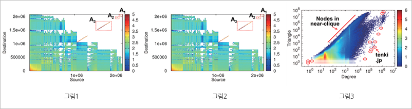

주제별 연구성과
주제별 연구성과
KAIST RESEARCH ACHIEVEMENTS
테라스케일의
대용량 그래프를 분석하다!
전산학과 강유
요약
그래프 마이닝은 컴퓨터 네트워크, 소셜 네트워크, 단백질 네트워크 등 다양한 개체를 모델링하는데 쓰이는 그래프를 분석하여 패턴과 비정상 신호를 찾는 것을 목표로 한다. 본 연구에서는 수백, 수천 억 개의 노드를 가지고 수십, 수백 테라바이트 이상의 저장 공간을 필요로 하는 대용량 테라 스케일 그래프를 효율적으로 마이닝하기 위한 분산 시스템과 알고리즘을Eigensolver, 텐서, 그래프 시각화/요약/비정상 탐지 분야에 대하여 제안하였다.
연구내용

그래프는 컴퓨터 네트워크, 소셜 네트워크, 전화 네트워크, 단백질 네트워크, 웹 등 다양한 개체를 모델링하는데 사용되어 왔다. 그래프마이닝은 대용량 그래프에서 패턴과 비정상 신호를 찾음으로써 친구 추천, 사이버 시큐리티, 사기 방지, 스패머 탐지 등의 다양한 응용에 활용된다. 기존 연구에서는 그래프 분석을 위해 하나의 머신만을 사용하고, 병렬화를 고려하지 않았기 때문에 수백, 수천억 개의 노드를 가지고 수십, 수백 테라바이트 이상의 저장 공간을 필요로 하는 매우 큰 대용량 그래프를 마이닝하는 것이 불가능했다. 따라서 대용량 그래프를 분산 시스템에서 효율적으로 처리하는 방법에 대한 연구가 필요하게 되었다.
본 연구에서는 대용량 그래프 분석을 위해 다수의 분산 시스템을 활용한 효율적인 그래프 마이닝 시스템과 알고리즘을 다음 세 가지 분야에 대하여 제안하였다.
1. Eigensolver
그래프 인접 행렬의 Eigenvalue와 Eigenvector를 계산하는 대용량 분산 알고리즘을 제안하였다. 제안된 알고리즘은 기존 알고리즘 대비 100배이상 큰 그래프를 다룰 수 있고, 실행 시간도 57배 이상 빠르다. 이를 통해 기존에 분석할 수 없었던 대용량 Twitter 그래프에서 삼각형을 분석하여 악성 계정을 자동으로 찾는데 활용하였다.
2. Tensor
다차원 배열인 텐서는 시간이 지나며 변화하는 그래프를 모델링 하는데 많이 쓰이는데 본 연구에서는 대용량 텐서를 분해하는 분산 알고리즘을 제안하였다. 제안된 알고리즘은 텐서 분해 수행 시 생성되는 중간 데이터크기를 획기적으로 줄임으로써 기존 알고리즘에 비해 100배 이상 큰 텐서를 처리할 수 있다.
3. 그래프 시각화, 요약, 비정상 탐지
수십, 수백억 개의 노드를 갖는 그래프를 요약하여 시각화하고 비정상노드를 탐지하는 기술을 제안하였다. 그래프 시각화에서 기존 방법은 그래프를 모두 메모리에 올려서 전체를 보여줬기 때문에 대용량 그래프데이터를 처리하지 못했다. 제안된 방법은 분산 시스템을 활용하고 그래프데이터를 효율적으로 요약하는 방법을 사용해 대용량 그래프를 효과적으로 보여주었다. (아래그림)

그림 1. 미국 특허 그래프의 spy plot(인접 행렬 패턴) 분석을 통한,
A1, A2, A3로 표시된 커뮤니티들 발견
그림 2. YahooWeb 그래프의 삼각형 분포도 분석을 통한 이상웹사이트 분석. 화살표로 표시된 사이트들은 성인 사이트임
그림 3. Twitter 그래프의 차수와 삼각형 비교도 분석을 통해 서로 밀접히 연관된
사용자들, 또는 주변 노드가 상대를 거의 알지 못하는 이상 사용자 발견
기대효과
본 연구를 통해 기존에 분석할 수 없었던 테라 스케일의초 대용량 그래프를 마이닝하여 친구 추천, 사이버시큐리티, 사기 방지, 스패머 탐지 등의 다양한 응용에 활용할 수 있을 것으로 기대된다.
연구실적
ㆍ대용량 분산 그래프 마이닝 소프트웨어인 Pegasus를 개발, Open Source로 공개했으며 개발된 알고리즘은 Microsoft의 서버 OS인 Windows Azure의 Hadoop 배포판에 공식 포함.
ㆍ미국 특허 2개 출원
ㆍIEEE ICDM, PAKDD 국제학회 최우수 논문상